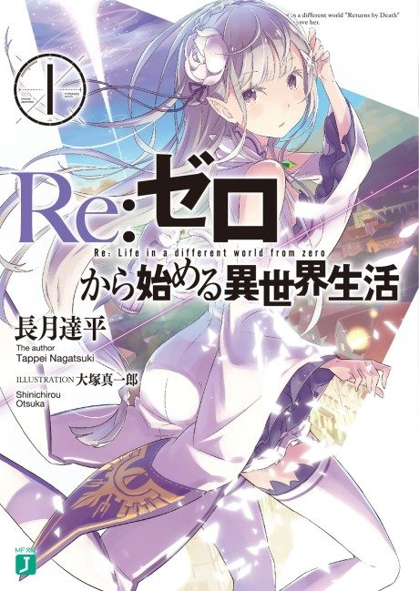

Animeter
← Rankings Anime
Anime
Light novel2016 · Action, Adventure, Drama
Re:Zero − Starting Life in Another World
Re:ゼロから始める異世界生活
AniList8.1
Animeter—
Season 125 ep
SourceLight novel
Key events
These are spoilers. They stay blurred until you reveal them, one at a time or all at once.
Arc 1: The Loot House Ep 1–3
- Subaru is killed at the loot house and wakes up earlier that day, discovering his Return by Death.
- He learns the hard way that he can't tell anyone about his ability.
- Subaru saves the girl, who reveals her real name is Emilia, with help from the Sword Saint Reinhard.
Arc 2: Roswaal Mansion Ep 4–11
- Subaru dies repeatedly in his sleep and suspects the mansion's maids, Rem and Ram.
- Rem kills Subaru in one loop, suspecting him of being tied to the Witch Cult.
- A curse from the village children turns out to be behind his deaths, and Subaru wins Rem's trust by saving the village from mabeasts.
Arc 3: The Royal Selection and Despair Ep 12–18
- Subaru humiliates himself at the royal selection and is beaten in a duel by Julius.
- Emilia leaves him behind, and he returns to find the Witch Cult massacring the village.
- Rem dies protecting him, Subaru breaks down, and Rem's faith in him in episode 18 pulls him back from despair.
Arc 3: The White Whale and Sloth Ep 19–25
- Subaru forms an alliance with Crusch Karsten and Anastasia Hoshin.
- Wilhelm van Astrea finally avenges his wife by slaying the White Whale.
- Subaru and Julius defeat Petelgeuse Romanee-Conti, the Archbishop of Sloth, and Subaru confesses his love to Emilia.
Arc 4: The Sanctuary (Part 1) Ep 26–38
- Rem falls into a coma and is erased from everyone's memories by Gluttony, except Subaru's.
- Emilia undertakes the Sanctuary's trials while the villagers are held there.
- Subaru meets the Witch of Greed, Echidna, and other witches in a dream-like tea party.
- Subaru learns that Elsa has attacked the mansion, while a giant rabbit swarm threatens the Sanctuary.
Arc 4: The Sanctuary (Part 2) Ep 39–50
- Otto and Garfiel become Subaru's allies after he learns to lean on others.
- Emilia confronts her past in the Elior Forest and completes the trials.
- Subaru rejects Echidna's contract and the Sanctuary's barrier is broken.
- Beatrice leaves the Forbidden Library and makes a contract with Subaru.
Arc 5: The Water Gate City of Priestella Ep 51–66
- The Witch Cult takes over the city's control towers and broadcasts its demands.
- Subaru and Emilia defeat Regulus Corneas, the Archbishop of Greed.
- Wilhelm and Reinhard are forced to face a revived Theresia van Astrea.
- The city is saved, but many people lose their names, memories or even their bodies to the Archbishops.
Arc 6: The Pleiades Watchtower – Loss Arc Ep 67–77
- The group reaches the tower and meets its guardian, Shaula, who claims Subaru is her master.
- A trial of strength pits Julius against the ghost of the first Sword Saint, Reid Astrea.
- Subaru wakes up with his memories of the other world gone and falls into suspicion and paranoia.
- Subaru, still amnesiac, vows to save everyone after his companions die.
Arc 6: The Pleiades Watchtower – Recapture Arc Ep 78–85
- Subaru confronts the Gluttony Archbishop who stole his memories and takes back his identity.
- Ram faces the Gluttony Archbishop Roy Alphard.
- Shaula's fate as the tower's guardian comes to a head in the finale.
- Rem finally wakes up from her long coma.